전자기사 (2007-05-13 기출문제)
1과목: 전기자기학
1. 자유공간내의 고유 임피던스는? (단, μ0 : 진공의 투자율, ε0 : 진공의 유전율이다.)
- μ0ε0
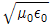
- μ0/ε0
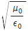
(정답률: 알수없음)

2. 미분방정식의 형태로 나타낸 멕스웰의 전자계 기초 방정식에 해당되는 것은?
- rot E = -∂B/∂t, rot H = ∂D/∂t, div D = 0, div B = 0
- rot E = -∂B/∂t, rot H = i + ∂D/∂t, div D = ρ, div B = H
- rot E = -∂B/∂t, rot H = i + ∂D/∂t, div D = ρ, div B = 0
- rot E = -∂B/∂t, rot H = i, div D = 0, div B = 0
(정답률: 알수없음)
3. 그림과 같이 반지름 a인 무한장 평행도체 A, B가 간격 d로 놓여 있고, 단위길이당 각각 +λ, -λ의 전하가 균일하게 분포되어 있다. A, B 도체간의 전위차는 몇 V 인가? (단, d ≫ a 이다.)
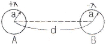
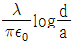
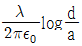
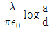
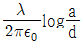
(정답률: 알수없음)
4. 유전체의 분극률이 x 일 때 분극벡터 P = xE 의 관계가 있다고 한다. 비유전률 4인 유전체의 분극률은 진공의 유전률 ε0의 몇 배인가?
- 1
- 3
- 9
- 12
(정답률: 알수없음)
5. 길이 1m인 철심(μs = 1000)의 자기회로에 1mm의 공극이 생겼다면 전체의 자기저항은 약 몇 배로 증가되는가? (단, 각 부의 단면적은 일정하다.)
- 1.5
- 2
- 2.5
- 3
(정답률: 알수없음)
6. 어떤 막대철심이 있다. 단면적이 0.5m2, 길이가 0.8m, 비투자율이 20 이다. 이 철심의 자기저항은 약 몇 AT/Wb 인가?
- 2.56×104
- 3.63×104
- 4.45×104
- 6.37×104
(정답률: 알수없음)
7. 자유공간 중에서 점 P(2,-4,5)가 도체면상에 있으며 이 점에서 전계 E = 3ax - 6ax + 2ax[V/m]이다. 도체면에 법선성분 En 및 접선성분 Et 의 크기는 몇 V/m 인가?
- En = 3, Et = -6
- En = 7, Et = 0
- En = 2, Et = 3
- En = -6, Et = 0
(정답률: 알수없음)
8. 반지름 50cm의 서로 나란한 두 원형코일(헤름홀쯔 코일)을 1mm 간격으로 동축상에 평행 배치한 후 각 코일에 100A의 전류가 같은 방향으로 흐를 때 코일 상호간에 작용하는 인력은 몇 N 정도 되는 가?
- 3.14
- 6.28
- 31.4
- 62.8
(정답률: 알수없음)
9. 비유전율이 4인 매질에서 주파수 100MHz인 전자파의 파장은 몇 m인가?
- 1.5
- 2
- 3
- 4
(정답률: 알수없음)
10. 반지름이 a[m]이고 단위길이에 대한 권수가 n인 무한장 솔레노이드의 단위 길이당의 자기인덕턴스는 몇 H/m 인가?
- μπa2n2
- μπan
- an/2μπ
- 4μπa2n2
(정답률: 알수없음)
11. 그림과 같이 정전용량이 C0[F]가 되는 평행판 공기콘덴서에 판면적의 1/2 되는 공간에 비유전률이 εS 인 유전체를 채웠을 때 정전용량은 몇 F 인가?
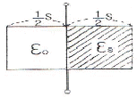
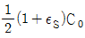
- (1+εS)C0
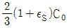
- C0
(정답률: 알수없음)
12. 그림과 같이 q1 = 6×10-8[C], q2 = -12×10-8[C]의 두 전하가 서로 10cm 떨어져 있을 때 전계세기가 0 이 되는 점은?
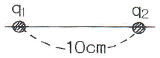
- q1과 q2의 연장선산의 q1으로부터 왼쪽으로 24.1cm 지점이다.
- q1과 q2의 연장선산의 q1으로부터 오른쪽으로 14.1cm 지점이다.
- q1과 q2의 연장선산의 q2으로부터 오른쪽으로 24.1cm 지점이다.
- q1과 q2의 연장선산의 q1으로부터 왼쪽으로 14.1cm 지점이다.
(정답률: 알수없음)
13. π[A]가 흐르고 있는 무한장 직선 도체로부터 수직으로 10cm 떨어진 점의 자계의 세기는 몇 A/m 인가?
- 0.⑤
- 0.5
- 5
- 10
(정답률: 알수없음)
14. 면적 A[m2], 간격 d[m]인 평행판콘덴서의 전극판에 비유전률 εr인 유전체를 가득히 채웠을 때 전극판가에 V[V]를 가하면 전극판을 떼어내는데 필요한 힘은 몇 N 인가?
- ε0εrV2A/2d2
- ε0εrV2A/d2
- ε0εrV2A/2πd2
- ε0εrV2A/2d
(정답률: 알수없음)
15. 반지름이 10cm인 접지 구도체의 중심으로부터 1m 떨어진 거리에 한 개의 전자를 놓았다. 접지구도체에 유도된 총전하량은 몇 C인가?
- -1.6×10-20
- -1.6×10-21
- 1.6×10-20
- 1.6×10-21
(정답률: 알수없음)
16. 다음 중 자기유도계수(self inductance)를 구하는 방법이 아닌 것은?
- 자기에너지법
- 자속쇄교법
- 벡터포텐셜법(Vector Potential Method)
- 스칼라포텐셜법(Scalar Potential method)
(정답률: 알수없음)
17. 다음 중 전계의 세기를 나타낸 것으로 옳지 않은 것은?
- 선전하에 의한 전계 : E = Q/4πε0r
- 점전하에 의한 전계 : E = Q/4πε0r2
- 구전하에 의한 전계 : E = Q/4πε0r2
- 전기 쌍극자에 의한 전계 :

(정답률: 알수없음)
18. 다음 중 정전계와 정자계의 대응관계가 성립되는 것은?
- div D = ρv → div B = ρm
- ▽2V = ρv/ε0 → ▽2A = i/μ0
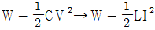
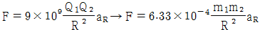
(정답률: 알수없음)
19. 무한 평면도체에서 r[m] 떨어진 곳에 ρ[C/m]의 전하분포를 갖는 직선도체를 놓았을 때 직선도체가 받는 힘의 크기[N/m]는? (단, 공간의 유전율은 이다)
- ρ2/ε0r
- ρ2/πε0r
- ρ2/2πε0r
- ρ2/4πε0r
(정답률: 알수없음)
20. 다음 중 정상자계(시불변자계)의 원천이 아닌 것은?
- 도선을 흐르는 직류전류
- 영구자석
- 가속도를 가지고 이동하는 전하
- 일정한 속도로 회전하는 대전원반(帶電圓盤)
(정답률: 알수없음)
2과목: 회로이론
21. 인덕턴스 L1 , L2가 각각 2mH, 4mH 인 두 코일간의 상호 인덕턴스 M이 4mH라고 하면 결합계수 K는 약 얼마인가?
- 1.41
- 1.54
- 1.66
- 2.47
(정답률: 알수없음)
22. 페이저도가 다음 그림과 같이 주어졌을 때 이 페이저도에 일치하는 등가 임피던스는?
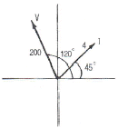
- 12.9+j48.3
- -25+j43.3
- 25+j43.3
- 2.8+j2.8
(정답률: 알수없음)
23. 저항 3Ω, 유도리액턴스 4Ω의 직렬회로에 60Hz의 정현파 전압 180V를 가했을 때 흐르는 전류의 실효치는?
- 26A
- 36A
- 45A
- 60A
(정답률: 알수없음)
24. 그림에 표시한 여파기는 다음 중 어디에 속하는가?
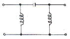
- 고역통과 여파기
- 대역통과 여파기
- 대역소거 여파기
- 저역통과 여파기
(정답률: 알수없음)
25. 다음 그림과 같은 이상 변압기의 권선비는?
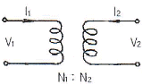
- V1/V2 = N2/N1
- V1/V2 = N1/N2
- I1/I2 = N1/N1
- I2/I1 = N2/N1
(정답률: 알수없음)
26. 대칭 4단자 회로망의 영상 임피던스는?
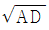
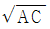
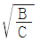
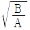
(정답률: 알수없음)
27. F(S) = S+α/(S+α)2+ω2의 역 라플라스 변환은?
- eatsinωt
- e-atsinωt
- eatcosωt
- e-atcosωt
(정답률: 알수없음)
28. 그림의 π형 4단자망에 있어서의 전송 파라미터 A 는?
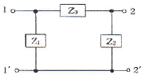
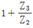
- Z1+Z2+Z3/Z1Z2
- Z3
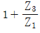
(정답률: 알수없음)
29. 다음 중 임피던스와 쌍대 관계가 되는 것은?
- 서셉턴스
- 컨덕턴스
- 어드미턴스
- 리액턴스
(정답률: 알수없음)
30. 비정현 주기파에 있어서 사각파 또는 구형파로부터 일그러짐의 정도를 나타내는 계수는?
- 0
- 1
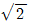
- 2
(정답률: 알수없음)
31. 무손실 분포정수 선로의 특성 임피던스 Z0 는?
- 1
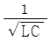
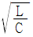
- L/C
(정답률: 알수없음)
32. 함수 f(t) = teat를 올바르게 라플라스 변환시킨 것은?
- F(S) = 1/(S-a)2
- F(S) = 1/(S-a)
- F(S) = 1/S(S-a)
- F(S) = 1/S(S-a)2
(정답률: 알수없음)
33. 어떤 회로에서 콘덴서의 캐패시턴스가 2.12μF 일 때, 주파수가 100Hz, 전압 200V를 인가했다면, 이 때 콘덴서의 용량성 리액턴스 XC [Ω]의 값은 약 얼마인가?
- 320
- 750
- 830
- 910
(정답률: 알수없음)
34. V = 311sin(377t-π/2) 인 파형의 주파수는 약 얼마인가?
- 60Hz
- 120Hz
- 311Hz
- 377Hz
(정답률: 알수없음)
35. 다음 중 변압기 결선에서 제3고조파를 발생하는 것은?
- Δ-Y
- Y-Δ
- Δ-Δ
- Y-Y
(정답률: 알수없음)
36. RLC 직렬회로에서, 공진 주파수보다 큰 주파수 범위에서의 전류는?
- 인가 전압의 위상과 동일하다.
- 인가 전압보다 위상이 뒤진다.
- 인가 전압보다 위상이 앞선다.
- 전류가 흐르지 않는다.
(정답률: 알수없음)
37. 도선의 반지름이 4배로 늘어나면, 그 저항은 어떻게 되는가?
- 4배로 늘어난다.
- 1/4로 줄어든다.
- 1/16로 줄어든다.
- 2배로 늘어난다.
(정답률: 알수없음)
38. R-L-C 직렬회로에서 R = 5Ω, L = 10mH, C = 100μF 이라면, 공진주파수는 약 몇 Hz 인가?
- 129
- 139
- 149
- 159
(정답률: 알수없음)
39. 공급 전압이 50V이고, 회로에 전류가 15A가 흐른다고 할 때, 이 회로의 유효전력은 몇 W 인가? (단, 전압과 전류의 위상차는 30°이다.)
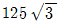
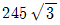
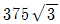
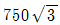
(정답률: 알수없음)
40. RL 직렬 회로에서 그 양단에 직류 전압 E를 연결한 후, 스위치 S를 개방하면 L/R초 후의 전류는 몇 [A]인가?
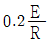
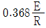
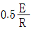
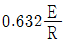
(정답률: 알수없음)
3과목: 전자회로
41. 다음 회로의 출력 파형(Vo)으로 가장 적합한 것은?
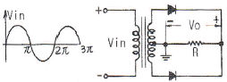
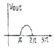
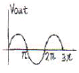
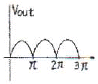
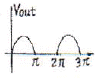
(정답률: 알수없음)
42. 트랜지스터 증폭기에서 동작점(Q)의 변동 원인에 영향이 가장 적은 것은?
- 동작 주파수의 변화
- β값의 변화
- ICO 값의 변화
- VBE(베이스와 이미터간의 바이어스 전압)의 변화
(정답률: 알수없음)
43. 입력전압이 0.02V 일 때, 기본파의 출력전압이 30V이고, 7%의 제2고조파를 포함하고 있다. 이 증폭기의 출력 1.2%를 입력에 부궤환 했을 때 출력전압은 약 몇 V 인가?
- 1.2
- 1.6
- 4.5
- 6.8
(정답률: 알수없음)
44. 다음 그림의 회로가 논리회로라면 입력 A, B와 출력 C 사이의 논리식은? (단, 정의 논리이다.)
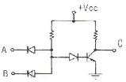
- C = A + B
- C = AㆍB
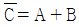
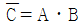
(정답률: 알수없음)
45. 그림과 같은 논리회로에서 Y는 어떻게 표시되는가?
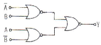
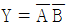
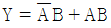
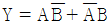
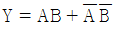
(정답률: 알수없음)
46. SR 플립플롭을 JK 플립플롭으로 바꾸어 사용하려 할 때 필요한 논리 게이트는?
- 2개의 OR
- 2개의 AND
- 2개의 NOR
- 2개의 NAND
(정답률: 알수없음)
47. 이미터 접지 증폭기에서 ICO = 0.1mA 이고, IB = 0.2mA 일 때, 컬렉터 전류는 약 몇 mA 인가? (단, 이 트랜지스터의 β = 50 이다.)
- 10
- 12.5
- 15.1
- 24.3
(정답률: 알수없음)
48. 다음과 같은 FET 소신호 증폭기회로에서 입력전압이 10mV 일때, 출력전압으로 가장 적합한 것은?
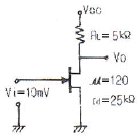
- 입력전압과 동위상인 100mV
- 입력전압과 역위상인 100mV
- 입력전압과 동위상인 200mV
- 입력전압과 역위상인 200mV
(정답률: 알수없음)
49. 다음 그림 (b)와 같은 회로에서 신호전압 Vi가 그림 (a)와 같이 변화할 때 출력전압 Vo로 가장 적합한 것은? (단, 다이오드 커트인 전압은 무시한다.)
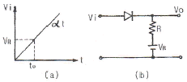
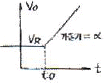
(정답률: 알수없음)
50. 링 카운터(Ring Counter)에 대한 설명 중 가장 적합한 것은?
- 직렬 시프트 레지스터의 최초 플립플롭의 출력(Q)을 최초 플립플롭의 J에 연결한다.
- 직렬 시프트 레지스터의 최종 플립플롭의 출력(Q)을 최초 플립플롭의 J에 연결한다.
- 직렬 시프트 레지스터의 최종 플립플롭의 보수 출력(
 )을 최종 플립플롭의 J에 연결한다.
)을 최종 플립플롭의 J에 연결한다. - 직렬 시프트 레지스터의 최초 플립플롭의 보수 출력(
 )을 최종 플립플롭의 J에 연결한다.
)을 최종 플립플롭의 J에 연결한다.
(정답률: 알수없음)
51. 수정발진기 회로의 특징에 대한 설명 중 적합하지 않은 것은?
- 수정진동자의 Q는 매우 크다.
- 통신용 송신기으 발진회로 등에 사용된다.
- 발진 주파수를 쉽게 가변시킬 수 있다.
- 발진 주파수의 안정도가 매우 높다.
(정답률: 알수없음)
52. 다음 그림 (b)는 회로 (a)에 대한 직류 및 교류 부하선을 나타낸 것이다. 회로 (a)의 부하저항 RL 의 값은 약 몇 kΩ인가? (단, C2는 교류적으로 단락이다.)
- 1
- 2
- 3
- 4
(정답률: 알수없음)
53. 어떤 차동증폭기의 동상신호제거비 CMRR이 80dB이고 차 신호에 대한 전압이득이 100000 이라고 할 때, 이 차동증폭기의 동상신호에 대한 이득은 얼마인가?
- 0.1
- 1
- 10
- 12.5
(정답률: 알수없음)
54. 어떤 트랜지스터 증폭회로의 전류증폭도 Ai = 50, 전압증폭도 Av = 200 이라고 할 때, 이 회로의 전력증폭도 Ap는 몇 dB 인가?
- 10
- 20
- 30
- 40
(정답률: 알수없음)
55. 듀티 사이클(Duty Cycle)이 0.1 이고, 주기가 30μs 인 펄스의 폭은 몇 μs 인가?
- 0.3
- 1
- 3
- 10
(정답률: 알수없음)
56. FM 통신방식과 AM 통신방식을 비교했을 때, FM 통신방식에서 잡음 개선에 대한 설명으로 가장 적합한 것은?
- 변조지수와 잡음 개선과는 관계없다.
- 변조지수가 클수록 잡음 개선율이 커진다.
- 변조지수가 클수록 잡음 개선율이 적어진다.
- 신호파의 크기가 적을수록 잡음 개선율이 커진다.
(정답률: 알수없음)
57. 공통 이미터 증폭기 회로에서 이미터 저항의 바이패스 콘덴서를 제거하면 어떤 현상이 일어나는가?
- 잡음이 증가한다.
- 전압이득이 감소한다.
- 전류이득이 증가한다.
- 회로가 불안정하게 된다.
(정답률: 알수없음)
58. 증폭기의 궤환에 대한 설명 중 옳지 않은 것은?
- 부궤환을 걸어주면 전압이득은 감소하지만 대역폭이 증가하고 신호왜곡이 감소한다.
- 궤환신호(전류 또는 전압)가 출력전압에 비례할 때 전압궤환이라 한다.
- 출력 전압 또는 전류에 비례하는 궤환전압이 입력신호 전압에 직렬로 연결되는 경우 직렬궤환이라 한다.
- 직렬궤환과 병렬궤환이 함께 사용된 것을 복합궤환이라 한다.
(정답률: 알수없음)
59. 연산증폭기(OP Amp)의 일반적인 특징에 대한 설명으로 옳은 것은?
- 주파수 대역폭이 좁다.
- 입력 임피던스가 낮다.
- 온도변화에 따른 드리프트가 크다.
- 동상신호제거비가 크다.
(정답률: 알수없음)
60. 다음 논리 게이트 중에서 중 Fan-out이 가장 큰 것은?
- RTL(Resistor-Transistor-Logic) 게이트
- TTL(Transistor-Transistor-Logic) 게이트
- DTL(Diode-Transistor-Logic) 게이트
- DL(Diode-Logic) 게이트
(정답률: 알수없음)
4과목: 물리전자공학
61. 균일자계 B에 자계와 직각 방향으로 속도 V를 갖고 입사한 전자의 각속도는? (단, 전자의 질량을 m, 전하량은 q)
- mV/qB
- qB/m
- 2πm/qB
- qB/2πm
(정답률: 알수없음)
62. 1eV를 올바르게 설명한 것은?
- 1개의 전자가 1J의 에너지를 얻는데 필요한 에너지이다.
- 1개의 전자가 1cm의 간격을 통과할 때 필요한 에너지이다.
- 1개의 전자가 1V의 전위차를 통과할 때 필요한 운동 에너지이다.
- 1개의 전자가 1m/sec의 속도를 얻는데 필요한 에너지이다.
(정답률: 알수없음)
63. 다음은 드브로이(de Broglie) 전자파의 파장 λ를 나타내는 관계식이다. h에 가장 합당한 것은?
- 일함수
- 페르미(Fermi)의 상수
- 플랭크(Plank)의 상수
- 볼쯔만(Boltzmann)의 상수
(정답률: 알수없음)
64. 기체 중에서 방전 현상은 어느 현상에 해당하는가?
- 전리 현상
- 절연 파괴
- 광전 효과
- 절연
(정답률: 알수없음)
65. 베이스 접지전류 증폭율이 0.98일 때 이미터 접지전류 증폭율은 얼마인가?
- 20
- 39
- 40
- 49
(정답률: 알수없음)
66. 컬렉터 접합부의 온도 상승으로 트랜지스터가 파괴되는 현상은?
- Saturation 현상
- break down 현상
- thermal runaway 현상
- pinch off 현상
(정답률: 알수없음)
67. n 채널 전계 효과 트랜지스터(Field Effect Transistor)에 흐르는 전류는 주로 어느 현상에 의한 것인가?
- 전자의 확산 현상
- 정공의 확산 현상
- 정공의 드리프트 현상
- 전자의 드리프트 현상
(정답률: 알수없음)
68. 광전자 방출에 대한 설명으로 옳지 않은 것은?
- 광전자 방출은 금속의 일함수와 관계가 있다.
- 금속 표면에 빛이 입사되면 전자가 방출되는 현상을 광전자 방출이라 한다.
- 한계 파장보다 긴 파장의 빛을 다량으로 입사시키면 광전자 방출이 일어난다.
- 광전자 방출을 위해서는 금속 표면에 입사되는 빛의 파장이 한계 파장보다 짧아야 한다.
(정답률: 알수없음)
69. Pauli의 배타율 원리를 만족하는 분포 함수는?
- Fermi-Dirac
- Bose-Einstein
- Gauss-error function
- Maxwell-Boltzmann
(정답률: 알수없음)
70. 반도체의 특성에 대한 설명 중 옳지 않은 것은?
- 홀 효과가 크다.
- 빛을 쪼이면 도전율이 증가한다.
- 온도에 의해 도전율이 현저하게 변화한다.
- 미량의 불순물을 첨가하면 도전율은 거의 비례하여 감소한다.
(정답률: 알수없음)
71. 진성 반도체에서 오도가 상승하면 페르미 준위는?
- 도너 준위에 접근한다.
- 금지대 중앙에 위치한다.
- 전도대 쪽으로 접근한다.
- 가전자대 쪽으로 접근한다.
(정답률: 알수없음)
72. 트랜지스터의 제조에서 에피텍셜 층(epitaxial layer)이 많이 사용되는 이유는?
- 베이스 전극을 만들기 위해서
- 베이스 영역을 좁게 만들기 위해서
- 낮은 저항의 이미터 영역을 만들기 위해서
- 낮은 저항의 기판에 같은 도전성 형태를 가진 높은 저항의 컬렉터 영역을 만들기 위해서
(정답률: 알수없음)
73. 자유전자가 정공에 의해 다시 잡혀서 정공을 채운다. 이러한 과정을 무엇이라 하는가?
- 열적 평형
- 확산(diffusion)
- 수명 시간(life time)
- 재결합(recombination)
(정답률: 알수없음)
74. 진성 반도체에서 전자나 정공의 농도가 같다고 하고, 전도대 준위는 0.3eV, 가전자대 준위를 0.7eV이라하면 페르미 준위는 몇 eV인가?
- 0.7
- 0.5
- 0.025
- 0.45
(정답률: 알수없음)
75. 다음 중 부성 저항 특성을 나타내는 다이오드는?
- 터널 다이오드
- 바랙터
- 제너 다이오드
- 정류용 다이오드
(정답률: 알수없음)
76. 다음 중 N형 반도체를 표시하는 식으로 옳은 것은? (단, n : 전자의 농도, p : 정공의 농도)
- n = p
- n＞p
- n＜p
- np = 0
(정답률: 알수없음)
77. 트랜지스터에서 컬렉터의 역방향 바이어스를 계속 증대시키면 컬렉터 접합의 공핍층이 이미터 접합의 공핍층과 닿게 되어 베이스 중성영역이 없어지는 현상을 무엇이라 하는가?
- Early
- Tunnel
- Drift
- Punch-Through
(정답률: 알수없음)
78. 열전자를 방출하고 있는 금속 표면에 전기장을 가하면 전자방출 효과가 증가하는 현상을 무엇이라 하는가?
- 지백 효과(Seeback effect)
- 톰슨 효과(Thomson effect)
- 펠티어 효과(Peltier effect)
- 쇼트키 효과(Schottky effect)
(정답률: 알수없음)
79. 다음 중 Fermi-Dirac 분포함수 f(E)는? (단, Ef는 페르미 준위, E는 에너지, T는 절대온도, k는 볼츠만의 상수이다.)
(정답률: 알수없음)
80. 다음 중 확산 정수 D, 이동도 μ, 절대온도 T 간의 관계식은?
- D/μ = kT
- μ/D = kT
- D/μ = kT/e
- μ/D = kT/e
(정답률: 알수없음)
5과목: 전자계산기일반
81. 다음 중에서 일반적인 직렬 전송 통신 속도를 나타낼 때 사용하는 단위는?
- LPM(Line Per Minute)
- CPM(Character Per Minute)
- CPS(Character Per Second)
- BPS(Bit Per Second)
(정답률: 알수없음)
82. 메모리 인터리빙(memory interleaving)의 목적은?
- memory의 효율을 높이기 위해서
- CPU의 idle time을 없애기 위해서
- memory의 access 회수를 줄이기 위해서
- 명령들의 memory access 충돌을 막기 위해서
(정답률: 알수없음)
83. 캐시(cashe) 메모리에 관한 설명 중 옳은 것은?
- hard disk에 비해서 가격이 저렴하다.
- 주기억장치에 비해서 속도가 느리지만 오류 수정 기능이 있다.
- 주기억장치에 비해서 속도가 빠르고, 가격이 비싸다.
- 병렬 처리 컴퓨터에 필수적이다.
(정답률: 알수없음)
84. 인터프리터(interpreter)와 컴파일러(compiler)의 차이점으로 옳은 것은?
- 목적 프로그램의 생성
- 원시 프로그램의 생성
- 목적 프로그램의 실행
- 원시 프로그램의 번역
(정답률: 알수없음)
85. 서브루틴의 리턴(복귀) 어드레스를 저장하기 위해 사용되는 자료구조는?
- STACK
- QUEUE
- Linked List
- Tree 구조
(정답률: 알수없음)
86. 2개의 지점 A와 B가 있을 때 양쪽에서 정보를 보내거나 받을 수는 있지만 동시에 정보를 주고받을 수 없는 전송 방식은?
- 단방향전송(simplex)
- 반이중전송(harfduplex)
- 전이중전송(fullduplex)
- 디지털전송(digital)
(정답률: 알수없음)
87. 레이스(race) 현상을 방지하기 위하여 사용되는 것은?
- JK 플립플롭
- RS 플립플롭
- T 플립플롭
- M/S 플립플롭
(정답률: 알수없음)
88. 두 수의 부호 비교 판단에 적합한 것은?
- NOR
- OR
- NAND
- EX-OR
(정답률: 알수없음)
89. 어드레스 모드(address mode) 중 번지 필드가 필요없는 모드(mode)는?
- register addressing mode
- implied addressing mode
- direct addressing mode
- indirect addressing mode
(정답률: 알수없음)
90. 자기 보수 코드(self complement code)는?
- 8421 code(BCD)
- gray code
- 6311 code
- excess-3 code
(정답률: 알수없음)
91. 누산기(Accumulator)에 관한 설명으로 적합하지 않은 것은?
- CPU내에 존재하는 레지스터이다.
- 계산 속도를 향상시킨다.
- 연산을 하는 곳이다.
- 연살 결과를 일시적으로 기억하는 곳이다.
(정답률: 알수없음)
92. 논리회로를 설계하는 과정에서 최적화를 위한 고려 대상이 아닌것은?
- 게이트 종류의 다양화
- 전파 지연 시간의 최적화
- 사용 게이트 수의 최소화
- 게이트 간의 상호 변수의 최소화
(정답률: 알수없음)
93. 다음 논리 연산자 중 데이터의 필요없는 부분을 지우고자 할 때 쓰는 연산자는?
- AND
- OR
- EX-OR
- NOT
(정답률: 알수없음)
94. 다음 10진수 -426을 팩 십진수(pack decimal)로 나타낸 것 중 옳은 것은? (단, 맨 오른쪽 4비트가 부호 비트이다.)
- 0100 0010 0110 1111
- 0110 0010 0110 1101
- 0100 0010 0110 0001
- 0100 0010 0110 1100
(정답률: 알수없음)
95. 다음 중 컴퓨터 운영체제에 속하지 않는 것은?
- LINUX
- WINDOW NT
- UNIX
- P에 11
(정답률: 알수없음)
96. 언어를 번역하는 번역기가 아닌 것은?
- Assembler
- Interpreter
- Compiler
- Linkage Editor
(정답률: 알수없음)
97. n 비트를 부호화된 2진 정보를 최대 2n개의 출력으로 변환하는 조합 논리회로는?
- Encoder
- Decoder
- Multiplexer
- Demultiplexer
(정답률: 알수없음)
98. 다음 중 마이크로프로세서 내부에 있는 레지스터에서 일반적으로 사용되는 기억소자는?
- Magnetic Tape
- Magnetic Disk
- Magnetic Core
- Flip-Flop
(정답률: 알수없음)
99. BASIC 프로그래밍 언어와 관계 없는 것은?
- 매우 간단한 프로그램이다.
- 컴퓨터 언어 학습용 프로그램이다.
- 소형 컴퓨터 및 PC에서 많이 사용한다.
- 사무처리용 프로그램이다.
(정답률: 알수없음)
100. 마이크로프로세서의 명령어 형식이 OP-code 5비트, Operand 11비트로 이루어져 있다면, 명령어의 최대 개수와 사용할 수 있는 최대 메모리 크기는?
- 32개, 1024워드
- 32개, 2048워드
- 64개, 1024워드
- 64개, 2048워드
(정답률: 알수없음)